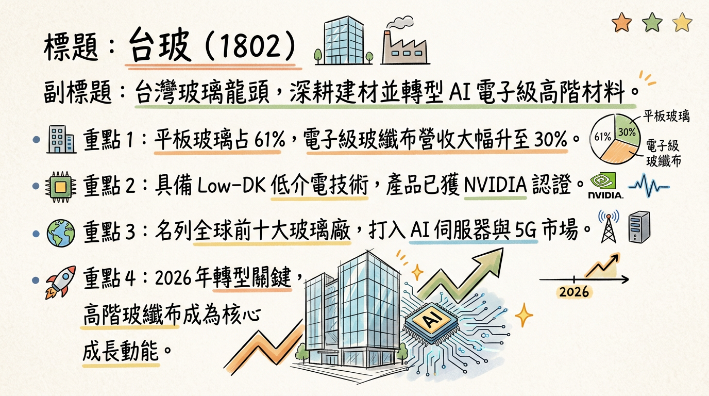
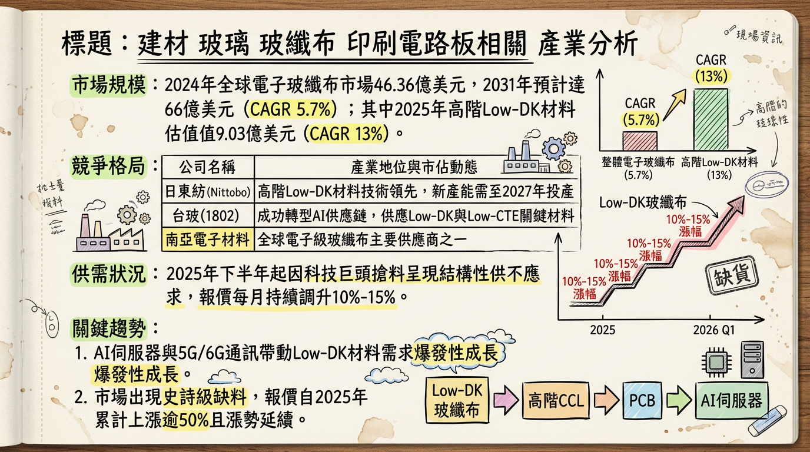
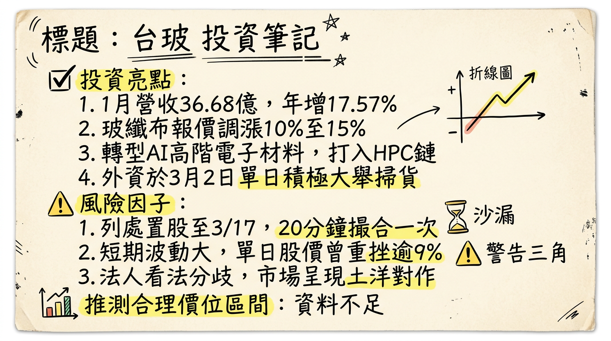

1802 台玻 深度研究報告
一句話摘要
台玻（1802）由傳統建材玻璃轉型「AI 高階電子材料」成效顯著，受惠 Low-DK 玻纖布供不應求與漲價潮，2026 年進入產能倍增與獲利爆發期。
公司概覽
台玻（1802）為全球前十大、台灣最大綜合玻璃製造商。近年策略重心轉向高毛利電子級產品，成功切入 NVIDIA 等 AI 伺服器供應鏈。
營收結構與產品線 (2025年前三季)
| 產品類別 | 營收佔比 | 應用領域 | 關鍵技術指標 |
|---|
| 平板玻璃 | 61% | 建築帷幕、節能 Low-E 玻璃 | 低迷受中國房市拖累 |
| 玻璃纖維 (含電子級布) | 30% | AI 伺服器、5G、低軌衛星 | Low-DK / Low-CTE |
| 玻璃器皿與容器 | 9% | 自有品牌 TG、工業/食廚容器 | 營運穩定 |
- 製造基地營收比重： 中國大陸 (65%)、台灣 (20%)、其他海外 (15%)。
核心競爭優勢
AI 供應鏈關鍵材料： 高階 Low-DK（低介電）玻纖布已通過 NVIDIA 認證，是 AI 伺服器 PCB 與 CCL 的核心耗材。
垂直整合能力： 具備從原紗到布的完整研發與生產能力，在漲價週期中具備極強定價權。
產能擴張效率： 2026 年中高階產線將從 4 條擴增至 12 條，擴產速度優於日系競爭對手（建廠需 3 年）。
財務分析
月營收趨勢表
| 月份 | 營收金額 (億元) | 月增率 MoM | 年增率 YoY |
|---|
| 2026/01 | 36.68 | -1.96% | +17.57% |
| 2025/12 | 37.41 | +3.74% | -6.39% |
| 2025/11 | 36.06 | +1.39% | -7.21% |
| 2025/10 | 35.57 | -3.98% | -2.58% |
| 2025/09 | 37.04 | +6.96% | +14.84% |
| 2025/08 | 34.63 | -2.90% | -0.14% |
年度獲利趨勢
- 2024年： EPS -0.54 元。
- 2025年前三季： EPS -0.33 元（營收 307.02 億元）。
- 2025 Q3 單季： EPS 0.1 元，正式終止連續 6 季虧損。
- 2026年預估： 受惠報價上調 10-15% 與新產能開出，法人預估 EPS 回升至 1.5~2.0 元。
法說會重點 (2025/11/20)
- 訂單能見度： 高階電子級玻纖布訂單已排至 2027 年，目前產線 100% 滿載。
- Guidance： 2026 年高階玻纖布出貨量預計年增 40% - 50%。
- 產能佈局： 將以台灣（桃園、鹿港）為核心擴產基地，確保高階技術不外流。
券商觀點
| 券商名稱 | 報告日期 | 目標價 | 評等 | 核心觀點 |
|---|
| 大型本土法人 | 2026/03/02 | 85 元 | 大幅調升 | 玻纖布月調價 10% 以上，獲利具爆發性 |
| 方格子 AI 分析師 | 2026/02/04 | -- | 強力買進 | 2026 全面轉盈，AI 材料佔比提升 |
| 某外資券商 | 2026/01/21 | 55 元 | 中性觀望 | 關注中國房市拖累 (⚠️資料較舊) |
財報深度分析
利潤率趨勢表格
| 季度 | 毛利率 (GM) | 營業利益率 (OM) | 備註 |
|---|
| 2025 Q3 | 11.66% | 1.38% | 正式轉盈 |
| 2025 Q2 | 8.82% | -1.54% | 受平板玻璃拖累 |
| 2025 Q1 | 7.42% | -3.12% | 營運谷底 |
- 資本支出： 2025 年投入 22.5 億元 新建 TD 紗產線，預計 2026 年中完成。
- 存貨分析： 2025 Q3 存貨天數降至 100.62 天 (對比 Q1 之 120 天)，去化速度加快。
股權異動與資本結構
- 董監異動： 2025/08/19 董事代表人徐莉玲申報轉讓 400 張，視為波段高點財務調整。
- 資本操作： 2025-2026 年無庫藏股、現增或發行可轉債。
- 股利政策： 因 2024 虧損無配息；2026 年預計因轉盈有機會配發 0.1-0.2 元現金。
產業分析：高階電子玻纖布競爭格局
| 排名 | 公司名稱 | 市佔率 | 優勢與定位 |
|---|
| 1 | 日東紡 (Nitto Boseki) | 70% - 90% | 技術標竿，Low-CTE 全球龍頭 |
| 2 | 台玻 (1802) | 20% - 25% | 2026 目標 40%，產能增速最快 |
| 3 | 中材科技 (Sinoma) | <10% | 供應中系 AI 供應鏈 |
- 產業趨勢： 高階 Low-DK 市場 CAGR 達 13%，日商產能須待 2027 年才投產，台玻 2026 年具備最強轉單紅利。
近期催化劑
* 玻纖布報價 2026/02 起每月調漲
10%-15%。
* 2026/03/02 股價觸及 30 年新高（67.2 元）。
* 通過 NVIDIA GB200 材料認證，訂單排至 2027。
* 證交所公告 2026/03/04 - 03/17 為處置期間（20 分鐘撮合）。
* 中國房市仍處疲軟，平板玻璃業務持續虧損。
⭐ 成長動能時間軸
- 2025 Q3： EPS 0.1 元正式轉盈，高階材料佔比升至 30%。
- 2025/11： 董事會通過 22.5 億元 TD 紗新建計畫，目標產能增 200%。
- 2026/02： 大陸玻纖大廠集體漲價，台玻同步跟進調升毛利率。
- 2026/Q2 - Q3： 關鍵節點，桃園、鹿港 4 座廠房完成改建，12 條產線全面量產。
- 2027 全年： 訂單能見度保障，高階產品全球市佔挑戰 45%。
2026 展望
1. AI 伺服器與 800G/1.6T 交換器帶動 Low-DK 超低損耗材料標配化。
2. 玻璃基板（Glass Substrate）技術的前瞻布局潛力。
1. 中國平板玻璃本業若虧損擴大可能侵蝕電子部獲利。
2. 能源成本（天然氣）受地緣政治波動影響。
投資結論
結構轉型確立： 台玻已從傳統玻璃股蛻變為「AI 材料股」，2026 年高階產品獲利貢獻將超過 50%。
報價漲勢強勁： 因日商擴產保守，缺料壓力至少延續至 2027 年，支撐產品單價（ASP）持續上揚。
目標價區間： 根據法人共識，2026 年 EPS 預估 1.5-2.0 元，以 40 倍 AI 供應鏈本益比估算，目標價看至 85 元。
操作建議： 近期受處置影響股價震盪，建議於 50-55 元支撐區間逢低佈局，中長線看好 2026 年產能釋放紅利。
本報告由 AI 自動產生，資料來源為公開網路資訊，僅供參考，不構成投資建議。
產生時間：2026-03-05 09:38
📊 資訊卡


